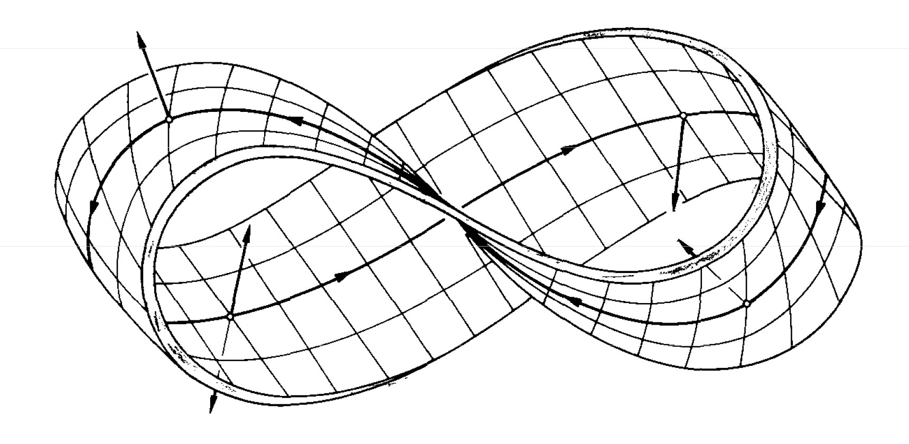
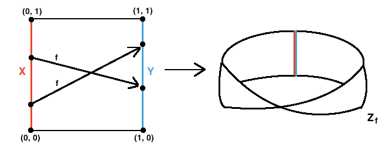
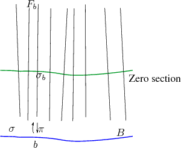

§ GT: Topological Manifolds
We can define a Topological Manifold as a Paracompact and Hausdorff topological space
(M,O) in which every point
p∈M has a neighborhood
p∈U∈O and there exists a homomorphism:
x:U→x(u)∈Rd
In other words, we can say that a topological space is a Manifold if it behaves like
Rd locally. This manifold, as obvious, is
d-dimensional. For example, a circle and a square are homeomorphic and represent the
S2 manifold.
§ Sub-Manifold
We can also extend this notion to the subsets of our topological space → So, if we have a space
N⊆M, then we call it a sub-manifold of
M if it is a manifold in its own right. All we need to check, thus, is the induced topology
(N,O∣N) and see if it is a manifold or not. So, a circle can be considered a sub-manifold of the
R2 , but two circles touching each other at exactly one point might not satisfy this since the point at which they touch is locally behaving like
R,R which is not the same as
R2.
§ Product Manifolds
We can also define a product manifold by taking two manifolds
(M,OM),(N,ON) and defining a topological manifold
(M×N,OM×N), which will have a dimension of
dim(M)+dim(N) . For example, a Toroid is a product of two circles and can be written as
T2=S1×S1, while a cylinder is
C=S1×R

A Mobius strip is a curious case since it cannot be written as a product Manifold, even though locally it looks like a product Manifold. To describe this, we need to define something new, called a Bundle .
§ Bundles
These are pretty central concepts to a lot of things. A bundle of topological Manifolds can formally be defined as a triplet
(E,π,M) where:
- E → Total Space
- M → Base Space
- π → A continuous surjective map from the Base space to the total space a.k.a a projection
For a point
p∈M , the pre-image of the set only containing
p under the map
π is called a Fibre:
F:=preimπ({p})∃p∈M
For example, let's take a product Manifold. For a Fibre Bundle
F and a base space
M , we can define the total space as:
E=M×Fπ:M×F→M
So, a Mobius strip can be through of a Bundle constructed by taking a rectangle and identifying sides going in opposite direction and then projecting the points on to the center.

We find that even though it is not a product Manifold, we can say that the pre-image of every point maps to the interval
[−1,1] and this makes it a bundle of
S1. We can see that bundles are essentially a generalization of the idea of taking a product, by intuitively understanding that to make a bundle we basically take a base space and attach fibers in a certain way. However, the definition does not really mention any notion of the total space being built out of the base space, and this is the generalization bit.
§ Fiber Bundle
We can be a bit more restricted in our notion of a bundle and yet be more general than a simple product space, To better elucidate this, we can say that in a bundle the fiber for multiple points need not be the same for all points → We are only interested in the existence of some fiber as per its definition. So, if we restrict the points to having the same fiber
F:=preimπ({p})∀p∈M
Then we call
E→πM a Fiber Bundle with the Typical Fiber
F. We often write the map as
F→E→πM
Thus, fiber bundles are between Product Manifolds and General Bundles.
§ Section
Once we have a fiber bundle, we can further define a section of the bundle as a map
σ:M→E such that if we make a point
p∈M and map it to some point
q∈E, and then use
π:E→M to map it
q back to
M, then the projection of
q will be the same point:
π∗σ=IM

A very good example of this is in quantum Mechanics → The wave function
Ψ is a section of the complex line
C-line bundle, over some physical space, such as
R3. This goes as from the physical space to the complex space
§ Sub-Bundles
We can use the same logic of Sub-manifolds to create sub-bundles. We take a bundle
E→πM and then define another bundle
E′→π′M′ . Now, this new bundle will be a sub-bundle if it meets the following three conditions:
- E′⊂E
- M′⊂M
- π∣M′=π → When we restrict the projection map of our parent bundle to the base space of the other bundle, then we should essentially get the projection map of the other bundle
§ Isomorphism in Bundles
If we have two bundles:
E→πEMF→πFN
And we have two maps:
φ:E→Ff:M→N
Then, we call this a bundle morphism. This can essentially be seen as true if the map below commutes.
Now, if we also have
(φ−1,f−1) as another bundle morphism such that
φ−1:F→Ef−1:N→M
Then, the above two bundles are called isomorphic, since they clearly have the same fiber, and these isomorphic bundles are the structure-preserving maps. The essence of bundles, thus, not only lies in the topology of the manifolds but also in the projection → We can have topological spaces that are homeomorphic to each other but if the projection does not create an inverse mapping, then they won't be isomorphic as bundles. Bundles can also be
locally isomorphic if we restrict the mapping and they still maintain the relationship
§ Common Terminology on Bundles
- Trivial bundle → A bundle that is isomorphic to a product bundle
- Locally Trivial → A bundle that is locally isomorphic to a product bundle. E.g Cylinder is a trivial and so, locally trivial bundle, while a Mobius strip is locally trivial, but not a trivial bundle. Locally, any section of a bundle can be represented as a map from the base space to a Fibre. Thus, in Quantum Mechanics, it is okay to talk about Ψ locally as a function, but there might be spaces in the space where we cannot do so.
- Pull-Back Bundle → A fiber bundle that is induced by a map of its base-space. It allows us to create a sort of yellow-data from the white data. For example, if we have M′→fM and E→πM , then we can find the pullback-bundle E′→π′M′ as:
E′:={(m′,e)∈M×E∣∣∣π(e)=f(m′)}
§ Viewing Manifolds from Atlases
Let
(M,O) be a topological Manifold of dimension
d. Then a pair
(U,x) where
U∈Ox:U→Rd is called a chart of the manifold. This is just a terminology formalizing the notion that the neighborhood of a point in a manifold that maps to some subset of
Rd be called a chart. However, since
x maps to
Rd=R×R×... , we can now say that the components of
x are essentially coordinates of a point
p∈U w.r.t the chart
(U,x). This is crucial to understand, since now we are realizing that on any topological manifold, we can only define coordinates based on a chart, and we can have different such charts. Thus, there has to exist a set of charts such that every point is covered i.e
∪(U,x)∈AU=M
Thus, there will be many-empty charts that overlap, and the collection of such charts is called an
Atlas.
§ Compatibility in Charts
Two chard
(U,x) and
(V,x) are called
C0-compatible if either fo the following conditions are met:
- U∩V=Φ
- U∩V=Φ, but y∘x−1 exists
Now, this is essentially the case when we are looking at manifolds. However, as we can see, compatibility allows us to traverse between two charts without really worrying about the underlying manifold. For example, in physics, we are transforming between coordinate systems - which are the charts in this case - but we are working with the fundamental assumption that this transformation does not change the trajectory of the particle. In other words, we can see the trajectory as a curve on a manifold and the co-ordinate systems of measurement as the charts that are
C0-compatible. When these charts are pairwise compatible in an Atlas, then we get a
C0-Atlas.